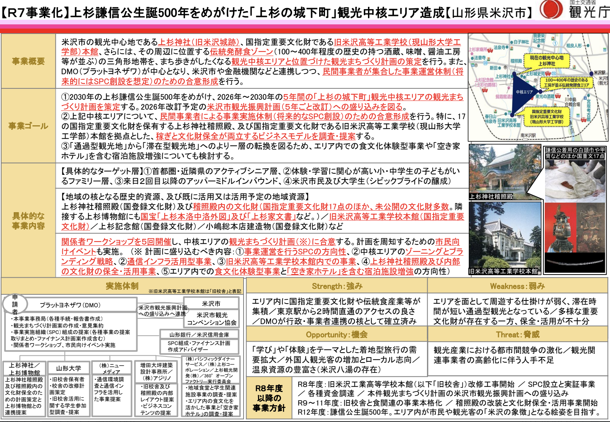

2030年の上杉謙信公生誕500年を見据え、米沢市の歴史的資源を活用した観光まちづくりを推進。上杉神社稽照殿・旧米沢高等工業学校本館・伝統発酵食文化の3拠点を結ぶ「三角エリア」を文化観光中核エリアとして構想し、「通過型観光」から「滞在型観光」への転換を図る。「護り続ける（文化財保存）」と「稼ぎ続ける（持続的収益）」を両立する「創造的循環モデル」を構築。
事業基本情報
| 項目 | 内容 |
|---|---|
| 事業名 | 上杉謙信公生誕500年をめがけた「上杉の城下町」観光中核エリアの造成 |
| 事業種別 | A. 事業化支援（調査事業） |
| 地域No. | 事業化_06 |
| 所管省庁 | 国土交通省 観光庁 観光地域振興部 観光資源課 |
| 事業スキーム | 歴史的資源を活用した観光まちづくり推進事業 |
| 申請団体 | プラットヨネザワ株式会社（代表：宮嶌浩聡） |
| 支援率 | 10/10（全額国費負担） |
| 対象経費精査額 | 9,877,600円 |
| 総事業費（実績） | 9,767,800円 |
| 事業期間 | 令和7年度（契約後 ～ 令和8年1月30日） |
| 精算方式 | 事業終了後の精算払い |
| 事務局 | TOPPAN（rekimachi@toppan.co.jp） |
プロジェクトミッション
"青春"であふれる、新・城下町時代をつくる
KGI（重要目標達成指標）
| KGI | 達成状況 |
|---|---|
| 「上杉の城下町」観光まちづくり計画案を策定し、関係者の合意形成を図るとともに、中核エリアにおける「滞在型観光」の方向性を明確にする | 達成 |
| 中核エリアにおいて行う民間事業の実施計画を定め、その運営を行うSPCの創設に向けた合意形成を完了する | 達成 |
精神性の拠点
プレミアム観光体験。上杉家伝来の国宝・重要文化財を収蔵する稽照殿を核に、保存環境の改善と情報発信強化を推進。保存協力金制度の導入を検討。
知の交流拠点
次世代教育活用。山形大学工学部内の歴史的建造物を博物館・リカレント教育・交流施設として再生。学生ガイドチーム構築も視野。
回遊の拠点
プレミアム観光体験。東町の発酵食文化を活用した食コンテンツ戦略。優先事業化エリアとして2026年度事業化開始決定。
施策体系
| 施策 | 概要 | KPI | 結果 |
|---|---|---|---|
| 施策① 観光まちづくり計画の策定 | 関係者WS・合意形成、米沢市観光振興計画改訂への反映 | WS 5回開催 / 計画策定 | 達成 |
| 施策② 事業実施体制の合意形成 | SPC創設を視野に入れた実施体制の合意形成 | 合意形成 / 観光振興計画への盛込み | 達成 |
ワークショップ全5回 実施サマリー
| 回 | テーマ | 参加者 | 主な成果 |
|---|---|---|---|
| 第1回 | 事業全体の方向性・課題共有 | 30名 | ミッション原案「"青春"であふれる、新・城下町時代をつくる」創出 |
| 第2回 | 具体的施策の検討 | 30名 | 地域資源リスト作成、活用アイデア創出（三角地帯の"宝"整理） |
| 第3回 | ビジネスモデルの議論 | 22名 | 実現可能性の高いアイデア抽出、実行主体の課題明確化 |
| 第4回 | 実施体制・SPC構想の検討 | 25名 | SPC設立への基本合意、旧米沢高等工業学校本館収益モデル試算完了 |
| 第5回 | 総合計画の最終確認・合意 | 23名 | 「上杉の新・城下町づくり総合計画（案）」承認、ロードマップ確定 |
ワークショップ詳細（クリックで展開）
プロジェクト概要説明、先進事例紹介。「通過型観光からの脱却」「上杉神社への観光集中」等の課題と、国宝・重文・発酵食文化等の強みをグループ議論。グラフィックレコーダーによる可視化。
稽照殿・角屋氏、山形大学・黒田学部長、増田信吾氏のトークセッション。三角地帯の「宝」洗い出し（林泉寺、東光酒蔵、織物等）と活用アイデア創出。
観光立国推進基本計画、地域交通（伊藤氏）、重文活用事例（田原氏）のセッション。旧米高本館チームと稽照殿チームに分かれて実現可能性を議論。
WS1-3振り返り。SPC設立の方向性と短期〜長期プラン提案。稽照殿の文化財管理課題、増田氏による旧米高本館の空間計画・収益モデル暫定案提示。
田原氏による旧米高本館ソフト面活用案（企業イベント・地域食堂・リカレント教育）、宮嶌による「上杉の新・城下町づくり総合計画」提示。3チーム（上杉神社・旧米高・発酵食）に分かれ「欲しい視点」「取るべきアクション」を議論。受け入れ整備、保存協力金、運営一元化、二次交通、案内機能等の提案。
学生分科会調査
山形大学工学部の学生と全3回のWSを実施し、旧米沢高等工業学校本館の利活用を学生視点で検討。館内調査・街中フィールドワーク・企画書提案を実施。
学生からの提案：博物館機能拡充、地域食堂設置、VR/ARガイド、フィルムコミッション、階段教室を活用した有料教育講座、学生ガイドチーム構築など。
市民向けシンポジウム
WS全5回の成果を市民に共有し、今後の方向性を確認するシンポジウムを開催。増田信吾氏・山形大学森氏による基調講演、三角エリア構想・小野川温泉エリアのトークセッション、総括セッションを実施。
合意事項：三拠点連携の持続可能な観光まちづくり、伝統発酵食ゾーン最優先事業化（2026年度開始）、2030年に向けた段階的整備計画。
施策別経費内訳
| 施策 | 合計額（税込） | 構成比 |
|---|---|---|
| 施策① 観光まちづくり計画の策定 | 9,479,800円 | 97.1% |
| 施策② 事業実施体制の合意形成 | 288,000円 | 2.9% |
| 合計 | 9,767,800円 | 100% |
費目別内訳（クリックで展開）
| 費目 | 内容 | 金額（税込） |
|---|---|---|
| 人件費・賃金 | PM・報告書作成・計画策定・ブランディング（3,000円/h × 628h） | 1,884,000円 |
| 事務局・WSロジ・シンポ運営（1,500円/h × 380h） | 570,000円 | |
| 事務局・WSロジ・シンポ運営（1,300円/h × 300h） | 390,000円 | |
| 謝金 | ブランディング/PR戦略策定WS参加謝礼 | 264,000円 |
| 広告宣伝費 | 観光まちづくり計画リーフレット/チラシ（190.6円 × 3,000枚） | 571,800円 |
| 再委託費 | （株）アジリノ：旧米高・稽照殿コンセプト提案・レイアウト | 2,500,000円 |
| （株）パシフィックダイナーサービス：食コンテンツ戦略・歴史的建造物活用調査 | 2,000,000円 | |
| （株）ニューメディア：人流調査・二次交通フィジビリティ調査 | 800,000円 | |
| （一社）米沢みさわ小学校：学生視点での施設活用ニーズ調査 | 500,000円 | |
| 人件費（施策②） | SPC組成合意形成（3,000円/h × 96h） | 288,000円 |
| 合計 | 9,767,800円 | |
プロジェクトマネジメント、報告書作成、計画策定、WS運営
観光振興計画への反映、行政支援
文化財管理・保存、Zone A運営
稽照殿グランドデザイン、旧米高本館コンセプト提案・レイアウト
旧米高本館活用、学生分科会、次世代人材育成
発酵食エリア調査、食コンテンツ戦略、歴史的建造物活用調査
中核エリア人流調査、二次交通フィジビリティ調査
SPC設立支援、ファイナンス面でのアドバイス
WS設計・ファシリテーション、ブランディング/PR戦略策定
ワークショップ報告書
調査レポート一式
【レキマチプロジェクト】歴史的資源を地域の日常と未来につなぐシンポジウムを開催｜山形県米沢市
2025年12月22日（月）アクティー米沢にて、「歴史と文化のまち米沢」について行政・大学・民間事業者・市民など多様な関係者が集い、歴史的資源を活かした持続可能なまちづくりの方向性を共有・議論。増田信吾氏、山形大学 森佑季氏の基調講演、パネルディスカッション、小野川温泉エリアセッションを実施。

シンポジウム写真ギャラリー（クリックで展開）


（本事業・完了）
施設整備・環境整備
文化財活用推進
謙信公生誕500年
レキマチ事業体系
| 事業 | 年度 | 所管 | ステータス | 概要 |
|---|---|---|---|---|
| R7 エリア造成（本事業） | R7 | 観光庁 | 完了 | 計画策定・合意形成・調査（事業化支援） |
| R8 ハード事業 | R8 | 観光庁 | 申請済 | 上杉神社・稽照殿の施設整備・周辺環境整備 |
| R8 ソフト事業 | R8 | 文化庁 | 申請済 | 文化財活用推進・コンテンツ造成 |
R7→R8の接続：本事業（R7）で策定した「上杉の新・城下町づくり総合計画」に基づき、R8ではハード面（施設整備：観光庁補助金）とソフト面（文化財活用：文化庁補助金）の両輪で事業を推進。R7で決定した優先事業化エリア「伝統発酵食ゾーン（東町）」は2026年度より事業化開始。
2026年（令和8年）：新・城下町の骨格を作る
| 時期 | 施策 |
|---|---|
| 1-3月 | 米沢市観光振興計画への反映、各事業の実施体制構築・運営準備 |
| 4月〜 | 伝統発酵食ゾーン事業化開始、R8ハード事業・ソフト事業の申請・実施 |
中長期ロードマップ
| 年度 | マイルストーン |
|---|---|
| 2026年（R8） | 伝統発酵食ゾーン事業化、施設整備着手 |
| 2027年（R9） | 本格運営開始 |
| 2030年 | 上杉謙信公生誕500年 — 文化観光中核エリア完成目標 |